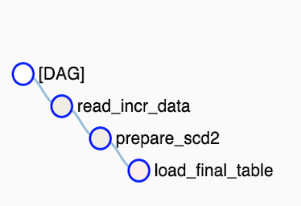

Task Synchronization in Airflow: Implementing Idempotent DAGs
In an ideal world, An airflow task should represent an atomic transaction.
A failure in the task should not lead to any inconsistency in the system.
But we data-engineer, do deviate from that ideal world, especially when we work on a legacy application.
So here we are, We were migrating a few pipelines that calculate Slowly Changing Dimension. On a high level, these processes have three parts.
So here we are, We were migrating a few pipelines that calculate Slowly Changing Dimension. On a high level, these processes have three parts.
- Reading incremental data files.
- Comparing this data with historical records and preparing updates for changed records.
- Writing the updated data back into the system.

We achieved the desired dependencies by adding a dependency read_incr_data >> load_final_table and set wait_for_downstream to true.
In this case, the first task of the DAG "read_incr_data" must wait for the last task "load_final_table" to be successful from the previous DAG run.
Additionally, we set depends_on_past
True and max_active_runs
.
A quick brush-up of these Airflow concepts are given below:
wait_for_downstream (bool) – when set to true, an instance of task X will wait for tasks immediately downstream of the previous instance of task X to finish successfully before it runs.
max_active_runs - the Airflow scheduler will run no more than max_active_runs DagRuns of your DAG at a given time.
depends_on_past - the previous task instance needs to have succeeded (except if it is the first run for that task).
A More Complex Scenario
In data processing, there are instances where we either receive a feed of 0 bytes or don't receive the file at all.To address this, we aim to verify and skip the scheduled run if no data is available for processing. We've implemented the "check_file_availability" task utilizing the BranchPythonOperator to simulate the check for incremental data and decide on the skiping the loading. To standardize this solution and facilitate its reuse for DAGs with a self-dependency on past runs, we propose the inclusion of two Dummy tasks: one as the starting task and the other as the ending task. By establishing dependencies between these tasks, we ensure the desired processing flow and enable easy integration into existing workflows.
Let's delve into the details of the DAG:

Below is a code snippet. You can find the complete code and instructions for running it in Docker at https://github.com/soyelherein/airflow-dag-past-run-sense
HighLights
- Specify depends_on_past=True for the "start_task".
- Add a dependency link from "start_task" to "end_task"
- Specify trigger_rule as "none_failed" for the "end_task", If it could have an upstream task skipped.
- If the DAG's skip task is set up using the ShortCircuitOperator, it needs to be replaced with the BranchPythonOperator. The main reason for this change is that with the ShortCircuitOperator, the entire path of dependencies, including the "end_task," will be skipped.
References
Airflow FAQ Why isn't my task getting scheduled?
Airflow Concepts trigger rules
Getting Started with Airflow Using Docker
Published on 29th December 2021 ©soyelherein.github.io